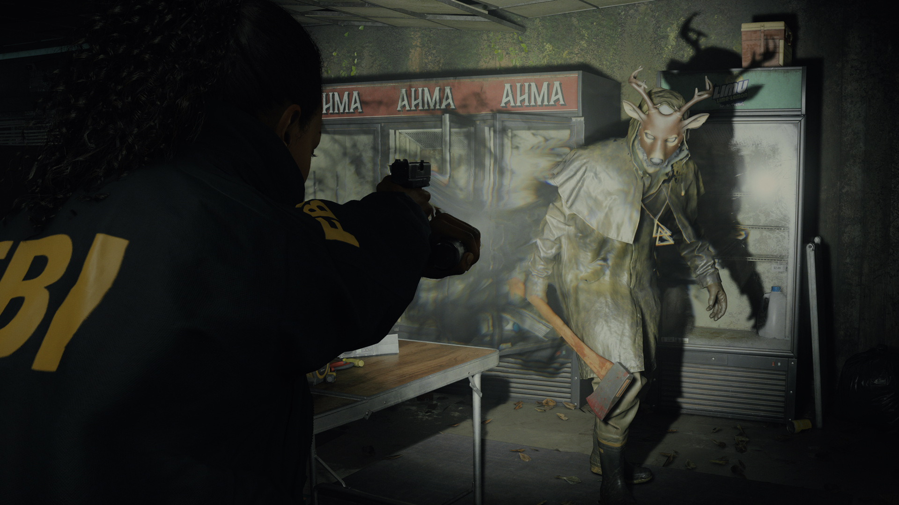
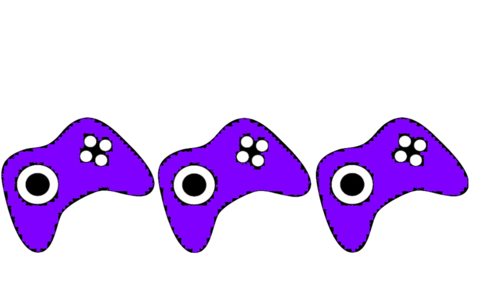

Alan Wake 2 - Päähenkilön Vaihdos Jättää Kaipuun
Alan Wake -sarjan odotettu jatko-osa, Alan Wake 2, astuu pimeyteen tarjoamalla pelaajilleen syvemmän sukelluksen kauhun ja mysteerien maailmaan. Vaikka peli kunnioittaa edeltäjänsä perintöä, sen päähenkilön vaihtuminen jättää jäljen, joka saattaa jakaa fanikunnan mielipiteitä.
Yksi Alan Wake -sarjan tunnusmerkeistä oli sen ikoninen päähenkilö, Alan Wake, joka taisteli omia sisäisiä ja ulkoisia demoneitaan vastaan ainutlaatuisella tyylillään. Alan Wake 2:ssa tämä tuttu hahmo on kuitenkin korvattu uudella, mikä voi olla pettymys niille, jotka olivat kiintyneet Alanin persoonallisuuteen ja tarinaan.
Vaikka uusi päähenkilö tuo mukanaan oman tarinansa ja persoonallisuutensa, hänen välitön vaihtumisensa voi häiritä ja hälventää pelaajan immersiota pelimaailmaan. Lisäksi, vaikka uuden päähenkilön tarina saattaa olla kiinnostava, se ei välttämättä tarjoa samaa syvyyttä ja monimutkaisuutta kuin Alan Waken tarina.

Pelattavuudeltaan Alan Wake 2 jatkaa sarjan perinteitä tarjoten intensiivisiä ja taktisia taisteluita pimeyden voimia vastaan. Valon ja pimeyden tematiikka on edelleen keskeisessä roolissa, ja se luo kiehtovan ja uniikin pelikokemuksen, joka on tuttua Alan Wake -sarjalle.
Graafisesti Alan Wake 2 on vaikuttava, tarjoten upeasti toteutetut maisemat ja yksityiskohtaiset hahmomallit. Pimeyden ja valon kontrasti on hienosti toteutettu, luoden peliin synkän ja ahdistavan tunnelman, joka pitää pelaajan jännityksessä alusta loppuun.
Valitettavasti pelin pituus saattaa olla pettymys joillekin pelaajille, sillä tarina voi tuntua hieman lyhyeltä verrattuna odotuksiin. Lisäksi, joissakin tapauksissa pelin tekniset ongelmat saattavat häiritä pelaajien kokemusta, kuten suorituskyvyn heikkeneminen tai satunnaiset bugit.
Kokonaisuutena Alan Wake 2 tarjoaa vahvan jatkon suositulle sarjalle, mutta päähenkilön vaihtuminen saattaa jakaa mielipiteitä ja jättää fanikunnan kaipaamaan Alan Waken tuttua hahmoa. Vaikka peli ei ole täydellinen, se on ehdottomasti tutustumisen arvoinen kaikille kauhun ja mysteerien ystäville.
